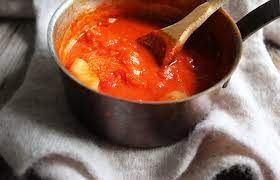

Pasta Sauce

Marcella Hazan's famous pasta sauce
This recipe proves that simple food can be the best tasting. Marcella Hazan is known as
the godmother of modern Italian cuisine, and this 3-ingredient recipe is going to blow your mind.
The simplicity belies the depth of flavor this sauce contains. Try it yourself, and you can never go back.
Ingredients
- (12) Roma tomatoes
- (1) Onion
- (4 Tbsp) Unsalted butter
- (3-4 pinches) Salt
Steps
- Using a chef's knife, score small "X's" on the top of each tomato.
- Once scored, place tomatoes into hot but not boiling water. Wait approximately 90 seconds for the skins to crack and begin to peel away.
- Once the skin has cracked, move tomates to an ice bath. Let rest approx 5 minutes.
- Drain the water, dice tomatoes, and add back to pot. Turn heat to Med-low to Med and add salt, mixing to combine.
- Once tomatoes are bubbling, turn heat to low and cover. Let tomatoes simmer 10-25 minutes, periodically mashing the tomatoes against the wall of the pot with a wooden spoon. We want to crusch the diced tomatoes, but leave them a little chunky to make a rustic, and not completely smooth sauce.
- Once the tomatoes have been simmering, and are at the desired consistency, add onion and butter.
- Stir sauce to combine butter as it melts, and as desired. Let sauce, onion, and butter simmer for at least 10 minutes, but as long as you would like. In general, longer is better as it allows for the flavors to better combine.
- And that's it! Enjoy this sauce over whatever pasta you prefer, and add proteins or cheeses as desired. You are probably now broken, and can never return to jarred pasta sauces, you're welcome!